Este trabajo aborda la predicción de eventos sísmicos de alta energía (más de 10⁴ julios) en minas de carbón subterráneas a partir de las mediciones del turno de trabajo anterior. Usamos el conjunto seismic-bumps de UCI, con 2.584 turnos de 8 horas de dos tajos largos de una mina en Polonia, de los cuales solo el 6,6 % precede a un evento peligroso. Se trata, por tanto, de una clasificación binaria con un desbalance fuerte, en la que un modelo que siempre responda «sin peligro» alcanza un accuracy de 93,4 % sin detectar ni un solo turno peligroso. Por esa razón la métrica principal es el F1 de la clase peligrosa.
El proceso se organizó en cuatro cuadernos reproducibles y una aplicación web. Tras el análisis exploratorio y la limpieza (6 duplicados y 3 columnas constantes eliminados), se separó una muestra de prueba del 20 % y se decidió el escalador (MinMaxScaler), que no se usara PCA y que el modelo trabajara con cinco rasgos (gpuls, nbumps, nbumps2, nbumps3 y energy). Se compararon 12 clasificadores con 4 estrategias de balanceo (41 combinaciones) mediante validación cruzada estratificada de 10 particiones, siempre con el balanceo dentro del pipeline para evitar fuga de información.
El modelo final es una máquina de vectores de soporte lineal con submuestreo aleatorio y calibración sigmoide de las probabilidades, con un umbral de decisión de 0,10. En validación cruzada obtiene un F1 de 0,333; en la muestra de prueba, un F1 de 0,299, con 16 de 34 turnos peligrosos detectados y 57 falsas alarmas entre 482 turnos sin peligro. La calibración fue una decisión tomada a mitad del trabajo, después de descartar una primera versión cuyas probabilidades eran casi idénticas para todos los turnos; ese episodio, y el hecho de que la muestra de prueba ya había sido consultada una vez, se documentan con transparencia. Concluimos que el modelo sirve como alerta temprana que ordena los turnos por riesgo, no como un sistema que dé certeza.
Palabras clave: peligro sísmico, minería de carbón, clasificación desbalanceada, F1, submuestreo, calibración de probabilidades, scikit-learn.
En las minas de carbón subterráneas, la extracción modifica el estado de tensión de la roca circundante. Cuando esa tensión se libera de golpe se producen sacudidas sísmicas, conocidas en la literatura como seismic bumps, cuya energía puede ser suficiente para provocar derrumbes en el frente de trabajo y poner en riesgo a las personas. Las minas modernas cuentan con geófonos y sistemas de monitoreo que registran de forma continua la actividad sísmica, pero convertir esas mediciones en una alerta confiable sigue siendo un problema abierto: los eventos de mayor energía son raros, y la relación entre la actividad observada y el peligro inmediato no es simple.
El objetivo de este trabajo es construir y evaluar un modelo de aprendizaje automático que, con las mediciones de un turno de trabajo de 8 horas, estime si en el turno siguiente ocurrirá un evento sísmico de más de 10⁴ julios. Tratamos el problema como una clasificación binaria supervisada, donde la clase 1 corresponde a un turno peligroso y la clase 0 a uno sin peligro.
El reto central es el desbalance de clases. Solo el 6,6 % de los turnos son peligrosos, de modo que las métricas habituales engañan: un clasificador trivial que nunca da la alerta obtiene un accuracy superior al 93 %. Por eso el trabajo se organiza alrededor de tres decisiones metodológicas:
El informe sigue el orden de los cuatro cuadernos del proyecto (exploración y limpieza; escalado, PCA y selección de rasgos; balanceo y comparación de modelos; ajuste, evaluación y exportación) y describe además la aplicación web que publica el modelo. Todo el código, los datos derivados, los modelos y las figuras están en el repositorio del proyecto, y cada resultado numérico de este documento puede reproducirse ejecutando los cuadernos en orden.
Usamos seismic-bumps, publicado por Sikora y Wróbel (2010) en el repositorio de aprendizaje automático de UCI (identificador 266, licencia CC BY 4.0). Los datos provienen del monitoreo de dos tajos largos de una mina de carbón en Polonia. Cada fila resume un turno de 8 horas: contiene mediciones de ese turno y la variable objetivo indica si en el turno siguiente ocurrió un evento sísmico de más de 10⁴ J. El archivo oficial en formato ARFF tiene 2.584 filas y 19 columnas (18 variables de entrada y la clase), sin valores faltantes, y es el único que leen los cuadernos.
| Variable | Descripción | Tipo |
|---|---|---|
seismic | Evaluación del peligro del turno con el método sísmico (a: sin peligro, b: bajo, c: alto, d: estado de peligro) | Categórica ordinal |
seismoacoustic | Evaluación del peligro con el método sismoacústico | Categórica ordinal |
ghazard | Evaluación sismoacústica basada solo en el geófono más activo | Categórica ordinal |
shift | Tipo de turno: W (extracción de carbón) o N (preparación) | Categórica binaria |
genergy, gpuls | Energía y número de pulsos registrados por el geófono más activo (GMax) | Numérica |
gdenergy, gdpuls | Desviación de la energía y de los pulsos de GMax respecto al promedio de los 8 turnos previos | Numérica |
nbumps | Número de sacudidas sísmicas del turno anterior | Numérica |
nbumps2 … nbumps5 | Sacudidas por rango de energía (de 10² a 10⁶ J) | Numérica |
nbumps6, nbumps7, nbumps89 | Sacudidas de energía muy alta (de 10⁶ a 10¹⁰ J) | Numérica (constante) |
energy, maxenergy | Energía total y energía máxima de las sacudidas del turno anterior | Numérica |
class | 1 si hubo un evento de más de 10⁴ J en el turno siguiente; 0 en caso contrario | Objetivo |
La clase objetivo está muy desbalanceada: 2.414 turnos sin peligro y 170 peligrosos, es decir, 93,42 % frente a 6,58 %. Esta proporción condiciona todo el diseño experimental y se discute en las secciones siguientes.
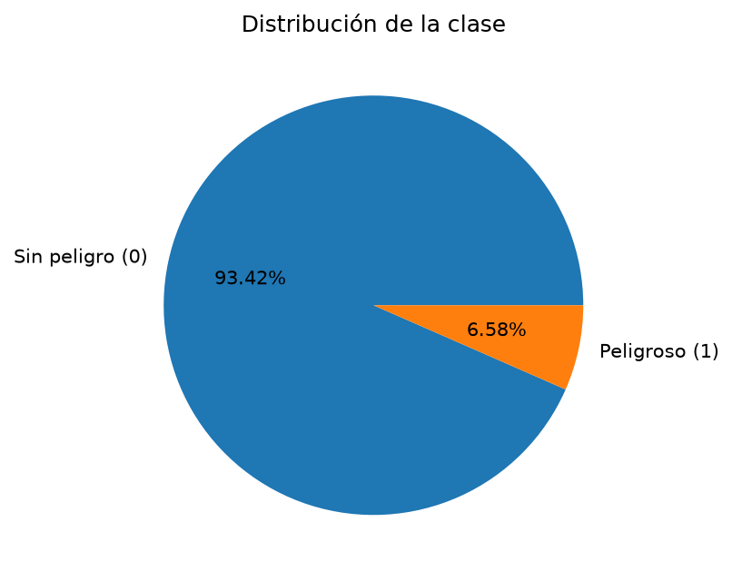
Para cada variable categórica comparamos el porcentaje de turnos peligrosos en cada categoría con el promedio general (6,6 %). El tipo de turno es la más informativa: el 9,20 % de los turnos de extracción (W, 1.663 turnos) fue peligroso, frente al 1,85 % de los turnos de preparación (N, 921 turnos), lo que es coherente con una mayor actividad en la mina durante la extracción. La evaluación sísmica seismic también aporta: 9,65 % en la categoría b y 4,93 % en la a. En cambio, seismoacoustic y ghazard casi no distinguen entre categorías (entre 6,25 % y 6,90 %); la categoría c de ghazard tiene 0 % de turnos peligrosos, pero solo reúne 30 turnos.
| Variable | Categoría | Turnos | % peligrosos |
|---|---|---|---|
shift | W (extracción) | 1.663 | 9,20 |
shift | N (preparación) | 921 | 1,85 |
seismic | a | 1.682 | 4,93 |
seismic | b | 902 | 9,65 |
seismoacoustic | a / b / c | 1.580 / 956 / 48 | 6,39 / 6,90 / 6,25 |
ghazard | a / b / c | 2.342 / 212 / 30 | 6,66 / 6,60 / 0,00 |
Las variables de energía y de conteo de golpes son muy asimétricas hacia la derecha. La asimetría de genergy es 5,17, la de energy 9,94, la de maxenergy 11,04 y la de nbumps5 14,58. La mayoría de los turnos concentra valores cercanos a cero y unos pocos alcanzan valores enormes: genergy tiene una mediana de 25.485 J y un máximo de 2.595.650 J, y energy tiene mediana 0 y máximo 402.000 J. Al separar por clase, los turnos peligrosos muestran valores más altos de nbumps (mediana cercana a 2 frente a 0), nbumps2, gpuls y genergy, mientras que gdenergy y gdpuls tienen distribuciones casi superpuestas entre clases.
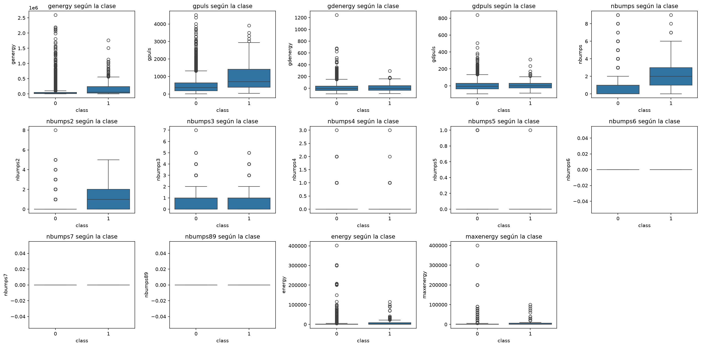
nbumps6, nbumps7, nbumps89) aparecen como líneas planas.Como el conjunto mezcla variables categóricas y numéricas, medimos la relación entre variables con el coeficiente phik (Baak et al., 2020), que se define para ambos tipos. Ninguna variable tiene una relación fuerte con la clase. Las más altas son nbumps (0,350), gpuls (0,263), genergy (0,231), shift (0,216), nbumps3 y nbumps2 (0,196 cada una); gdpuls, gdenergy, seismoacoustic y nbumps5 quedan en 0,000. Esto anticipa que el problema será difícil: no existe una variable que, por sí sola, separe bien los turnos peligrosos. También hay redundancia entre predictores: energy y maxenergy (0,96), genergy y gpuls (0,89), nbumps4 y energy (0,88), y seismoacoustic y ghazard (0,84).
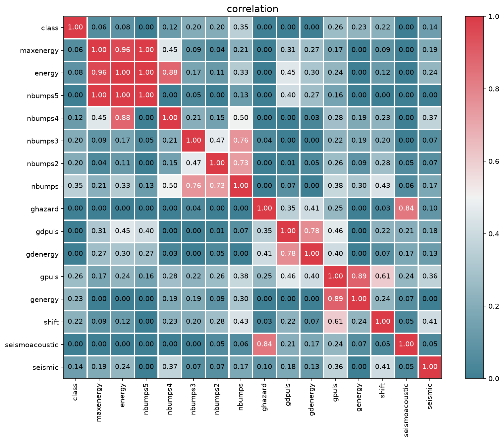
Se eliminaron 6 filas duplicadas, todas de clase 0, por lo que la limpieza no costó ningún turno peligroso: el conjunto pasó de 2.584 a 2.578 filas y conservó los 170 turnos de clase 1. También se eliminaron las tres columnas constantes (nbumps6, nbumps7 y nbumps89), que valen cero en todos los turnos y por tanto no pueden contribuir a separar las clases. Tras la limpieza quedan 2.578 filas y 16 columnas (15 variables de entrada más la clase).
Decidimos no eliminar los valores extremos. Las energías muy altas corresponden a eventos sísmicos reales y son precisamente lo que el modelo debe aprender a anticipar; descartarlos eliminaría la señal de interés. El costo es que el escalado y los modelos deben manejar colas muy pesadas.
Se separó una muestra de prueba del 20 % con partición estratificada y semilla 42, una sola vez y antes de codificar las categóricas, para poder conservar una copia con las letras originales que usa la aplicación. El entrenamiento quedó con 2.062 turnos (136 peligrosos, 6,60 %) y la prueba con 516 turnos (34 peligrosos, 6,59 %). La estratificación funcionó: ambas muestras mantienen la proporción del conjunto completo (6,59 %). Desde ese momento la muestra de prueba no se utilizó para ninguna decisión de modelado hasta la evaluación final.
Las evaluaciones de peligro (seismic, seismoacoustic, ghazard) van de menos a más (a < b < c < d), por lo que se codificaron de forma ordinal con un diccionario fijo (a = 0, b = 1, c = 2, d = 3), que se conserva aunque la categoría d no aparezca en los datos. El tipo de turno se codificó como N = 0 y W = 1. Se prefirió la codificación ordinal a la one-hot porque conserva el orden natural y no multiplica las columnas. El mismo diccionario, guardado en un archivo, se usa en los cuadernos y en la aplicación, de modo que una letra siempre produzca el mismo número.
Esta etapa se hizo únicamente con el conjunto de entrenamiento. Para comparar alternativas se usó siempre el mismo modelo de referencia, una regresión logística con class_weight="balanced", y una validación cruzada estratificada de 10 particiones con semilla 42. Todo lo que aprende de los datos (escaladores y selectores de rasgos) se colocó dentro del pipeline, de modo que se ajuste solo con la parte de entrenamiento de cada partición.
Se compararon tres opciones (sin escalar, MinMaxScaler y StandardScaler) con dos modelos sensibles a la escala, la regresión logística de referencia y una SVM con pesos de clase balanceados. El promedio de F1 entre ambos modelos fue 0,2656 con MinMax, 0,2580 con Standard y 0,2378 sin escalar, por lo que se eligió MinMaxScaler. Las diferencias son pequeñas frente a la desviación del F1 entre particiones (entre 0,03 y 0,06). Hay un efecto práctico adicional: la SVM sin escalar tardó unos 9 segundos y escalada, menos de uno.
| Escalador | Regresión logística | SVM | Promedio |
|---|---|---|---|
| Sin escalar | 0,250 | 0,225 | 0,238 |
| MinMaxScaler | 0,269 | 0,262 | 0,266 |
| StandardScaler | 0,259 | 0,257 | 0,258 |
Con el escalador elegido, hacen falta 5 componentes para explicar el 90 % de la varianza y 7 para el 95 %, de un total de 15 rasgos; la primera componente explica el 45,8 % y la segunda el 25,8 %. Sin embargo, PCA no mejora el rendimiento: el F1 es 0,269 con todos los rasgos, 0,264 con PCA al 90 % y 0,267 con PCA al 95 %. En la proyección sobre las dos primeras componentes los turnos forman cuatro grupos, que atribuimos a las categóricas codificadas, y dentro de cada grupo los turnos peligrosos quedan mezclados con los demás: no existe una dirección simple que separe las clases. Decidimos no usar PCA, para no perder la interpretación de los rasgos.
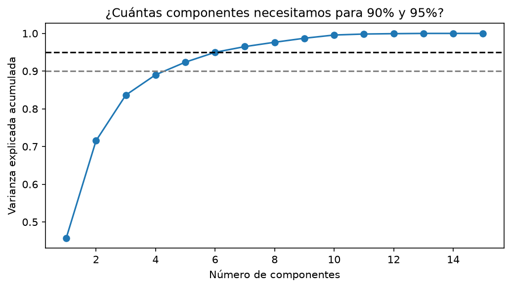
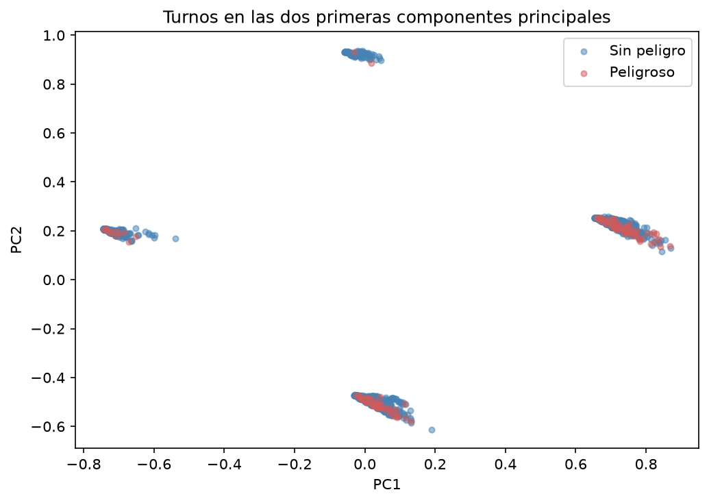
Se evaluaron seis métodos de selección, todos con el escalador elegido y el modelo de referencia: VarianceThreshold (sobre datos escalados a [0, 1]), SelectKBest con f_classif y con información mutua (probando todos los valores de k), RFECV, selección secuencial hacia adelante, selección con penalización L1 y selección por importancia SHAP (Lundberg y Lee, 2017) acumulando el 90 % de la importancia. Los selectores con ajuste supervisado se colocaron dentro del pipeline; VarianceThreshold, que no usa la clase, y SHAP, que no puede incluirse en un pipeline sin una clase propia, escogen sus rasgos una vez con el conjunto de entrenamiento, por lo que el F1 de SHAP puede ser algo optimista.
| Método | Rasgos | F1 | Desv. | ROC AUC |
|---|---|---|---|---|
SelectKBest f_classif (k = 1) | 1 | 0,291 | 0,071 | 0,744 |
| Selección hacia adelante (k = 1) | 1 | 0,291 | 0,071 | 0,744 |
| SelectKBest información mutua (k = 5) | 5 | 0,283 | 0,068 | 0,768 |
| SHAP (90 % de la importancia) | 8 | 0,282 | 0,062 | 0,775 |
| RFECV | 1 | 0,281 | 0,065 | 0,743 |
| Todos los rasgos (línea base) | 15 | 0,269 | 0,043 | 0,773 |
| SelectFromModel con L1 | 5 | 0,262 | 0,051 | 0,774 |
| VarianceThreshold (0,01) | 7 | 0,258 | 0,053 | 0,776 |
Todos los métodos quedan entre 0,258 y 0,291 de F1, dentro del ruido de la validación cruzada: ningún método es claramente mejor que otro. Tres métodos distintos (SelectKBest, RFECV y la selección hacia adelante) coinciden en que nbumps, el número de golpes sísmicos del turno anterior, es el rasgo que más información aporta. La regla de decisión definida en el plan (ganar el conjunto de mayor F1 y, si uno más pequeño queda dentro de una desviación del mejor, escoger el más pequeño) dejaba un único rasgo. Eso habría reducido el modelado a una comparación casi trivial y a una aplicación con un solo campo, así que el equipo la modificó antes de seguir: compiten únicamente los métodos con el selector dentro del pipeline, el conjunto debe tener al menos 3 rasgos y gana el de mayor F1. El resultado fue la información mutua con 5 rasgos (gpuls, nbumps, nbumps2, nbumps3 y energy), con un F1 de 0,283 y un ROC AUC de 0,768 (0,744 con nbumps solo).
nbumps2 y nbumps3 forman parte del conteo de nbumps, por lo que hay cierta redundancia; y shift, que en el análisis exploratorio mostró una diferencia grande de riesgo, no quedó entre los rasgos escogidos.Se compararon los 12 clasificadores vistos en el curso, ocho individuales (KNN, Naive Bayes, árbol de decisión, regresión logística, SVM, SVM lineal, red neuronal MLP y Random Forest) y cuatro ensambles (Bagging, AdaBoost, Gradient Boosting y Stacking), con cuatro estrategias de balanceo: sin balanceo, class_weight="balanced", SMOTE (Chawla et al., 2002) y submuestreo aleatorio. La estrategia class_weight solo existe en cinco modelos (árbol, regresión logística, SVM, SVM lineal y Random Forest), de modo que se evaluaron 12 × 3 + 5 = 41 combinaciones. Todas se evaluaron con validación cruzada estratificada de 10 particiones, con el escalador y el balanceo dentro de un pipeline de imbalanced-learn (Lemaître et al., 2017), de modo que el remuestreo nunca toca los datos de validación.
Balancear es lo que más pesa. Sin balanceo, el F1 promedio de los 12 modelos es 0,090 y el recall promedio apenas 0,080; con submuestreo sube a 0,250 de F1 y 0,645 de recall, con SMOTE a 0,234 y 0,481, y con class_weight (solo en 5 modelos) a 0,247 y 0,466. La precisión casi no se mueve entre estrategias (entre 0,154 y 0,179): balancear permite detectar muchos más turnos peligrosos, pero a costa de más falsas alarmas. El submuestreo fue la mejor estrategia en 8 de los 12 modelos, SMOTE en 2 (AdaBoost y Gradient Boosting) y class_weight en 2 (árbol y Random Forest).
| Estrategia | F1 | Recall | Precisión | ROC AUC | Accuracy |
|---|---|---|---|---|---|
| Sin balanceo | 0,090 | 0,080 | 0,154 | 0,705 | 0,921 |
class_weight (5 modelos) | 0,247 | 0,466 | 0,179 | 0,714 | 0,825 |
| SMOTE | 0,234 | 0,481 | 0,156 | 0,681 | 0,794 |
| Submuestreo | 0,250 | 0,645 | 0,157 | 0,736 | 0,734 |
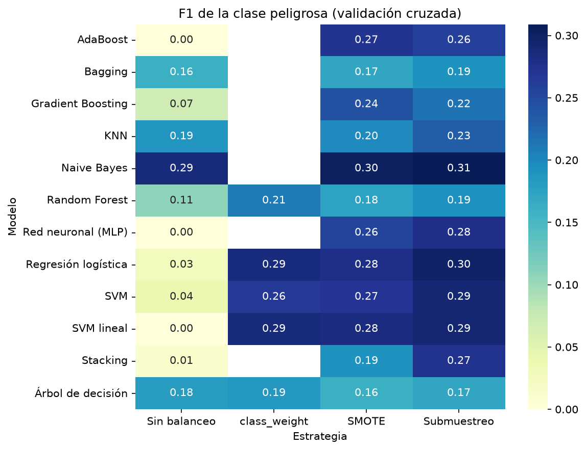
Los modelos que más aprovechan el balanceo son los que sin él se quedan casi en cero: la SVM lineal pasa de 0,000 a 0,291, la red neuronal de 0,000 a 0,277, AdaBoost de 0,000 a 0,272, la regresión logística de 0,028 a 0,298 y la SVM de 0,040 a 0,290. Naive Bayes ya rendía bien sin balancear (0,287) y mejora poco (0,309). KNN, el árbol de decisión, Bagging y Random Forest ganan poco y quedan por debajo de los modelos lineales (entre 0,185 y 0,231 en su mejor estrategia).
| Modelo | Estrategia | F1 | Desv. | Recall | Precisión | ROC AUC |
|---|---|---|---|---|---|---|
| Naive Bayes | Submuestreo | 0,309 | 0,085 | 0,615 | 0,207 | 0,778 |
| Naive Bayes | SMOTE | 0,303 | 0,060 | 0,573 | 0,207 | 0,762 |
| Regresión logística | Submuestreo | 0,298 | 0,069 | 0,675 | 0,192 | 0,780 |
| SVM lineal | Submuestreo | 0,291 | 0,074 | 0,646 | 0,189 | 0,778 |
| SVM | Submuestreo | 0,290 | 0,067 | 0,675 | 0,186 | 0,761 |
La diferencia entre el primer y el quinto puesto es de solo 0,019 de F1, mucho menor que la desviación entre particiones (de 0,060 a 0,085 en esos modelos). Con 136 turnos peligrosos en el entrenamiento, no puede afirmarse que Naive Bayes sea mejor que la regresión logística o las SVM. Lo que sí es claro es que forman un grupo por encima de los árboles y de los ensambles. Pasaron al ajuste las tres mejores combinaciones de modelos distintos (filas resaltadas).
La Figura 7 muestra la relación entre el accuracy y el F1 de las 41 combinaciones. Sin balanceo el accuracy promedio es 0,921, y la SVM lineal, la red neuronal y AdaBoost llegan a 0,933 o 0,934, casi igual que el 0,934 de decir siempre «sin peligro», con un F1 de 0,000. En cambio, las mejores combinaciones por F1 tienen accuracy de 0,79 a 0,82, por debajo de esa línea. Guiarse por el accuracy habría llevado a elegir justo los modelos que no detectan nada.
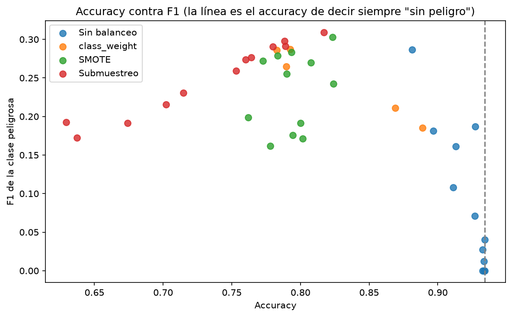
La primera versión del cuaderno final siguió el plan al pie de la letra: se ajustaron los hiperparámetros de las tres mejores combinaciones con el F1 a umbral fijo y luego se eligió el umbral. Ganó la regresión logística con submuestreo y C = 0,01, con un F1 de 0,296 en la muestra de prueba (20 de 34 turnos peligrosos detectados y 81 falsas alarmas). Sin embargo, el modelo quedó tan regularizado que casi todas sus probabilidades estaban entre 0,49 y 0,56, y el umbral funcionaba en un borde tan fino (con 0,49 marcaba todos los turnos como peligrosos y con 0,51 el F1 caía de 0,310 a 0,237) que una aplicación no habría podido mostrar un riesgo con sentido.
Se rehízo el ajuste con dos cambios. Primero, los hiperparámetros se buscaron con GridSearchCV usando la precisión promedio, que mide qué tan bien ordena el modelo los turnos y no depende del umbral. La búsqueda escogió var_smoothing = 1e-9 para Naive Bayes, C = 0,1 para la regresión logística y C = 0,1 para la SVM lineal; con ello la regresión logística dejó de caer en el extremo más regularizado de la grilla. Segundo, se calibraron las probabilidades con CalibratedClassifierCV (método sigmoide, 5 particiones; Platt, 1999). El submuestreo entrena con la mitad de turnos peligrosos cuando en la realidad son el 6,6 %, y la calibración, ajustada con pliegues que conservan la proporción real, corrige esa distorsión. Se usó el método sigmoide y no el isotónico porque solo hay 136 turnos peligrosos. La calibración da además predict_proba a la SVM lineal, que no lo tiene.
| Modelo (submuestreo) | Umbral | F1 | Recall | Precisión | ROC AUC | Brier |
|---|---|---|---|---|---|---|
| Naive Bayes | 0,16 | 0,309 | 0,478 | 0,228 | 0,750 | 0,0571 |
| Regresión logística | 0,10 | 0,323 | 0,515 | 0,235 | 0,776 | 0,0580 |
| SVM lineal | 0,10 | 0,333 | 0,537 | 0,242 | 0,777 | 0,0579 |
Después de calibrar, la mediana de la probabilidad de los tres modelos queda entre 0,036 y 0,039, cerca de la proporción real de turnos peligrosos. El Brier (el error cuadrático de las probabilidades) de los tres, entre 0,057 y 0,058, es menor que los 0,0616 de asignar el 6,6 % a todos los turnos; la mejora es real pero modesta, cerca de un 6 %, lo que confirma que estos modelos tienen una capacidad limitada. Se escogió como modelo final la SVM lineal con submuestreo y calibración sigmoide por tener el mayor F1, aunque su ventaja de 0,010 sobre la regresión logística es un empate práctico.
El umbral se escogió con las probabilidades calibradas de validación cruzada sobre el entrenamiento, probando valores de 0,01 a 0,95 de 0,01 en 0,01. El mejor es 0,10, con F1 de 0,333, recall de 0,537 y precisión de 0,242. A diferencia de la primera versión, la curva es suave en torno al óptimo (F1 de 0,326 con 0,09, 0,329 con 0,11, 0,307 con 0,08 y 0,306 con 0,12). Las probabilidades calibradas se reparten entre 0,026 y 0,888, con una mediana de 0,039 y un promedio de 0,067.
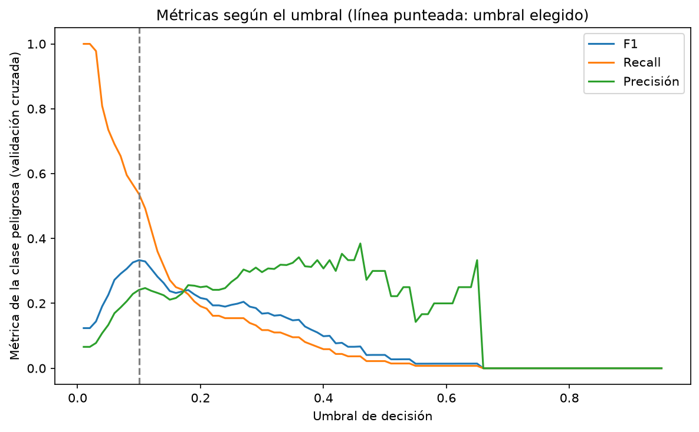
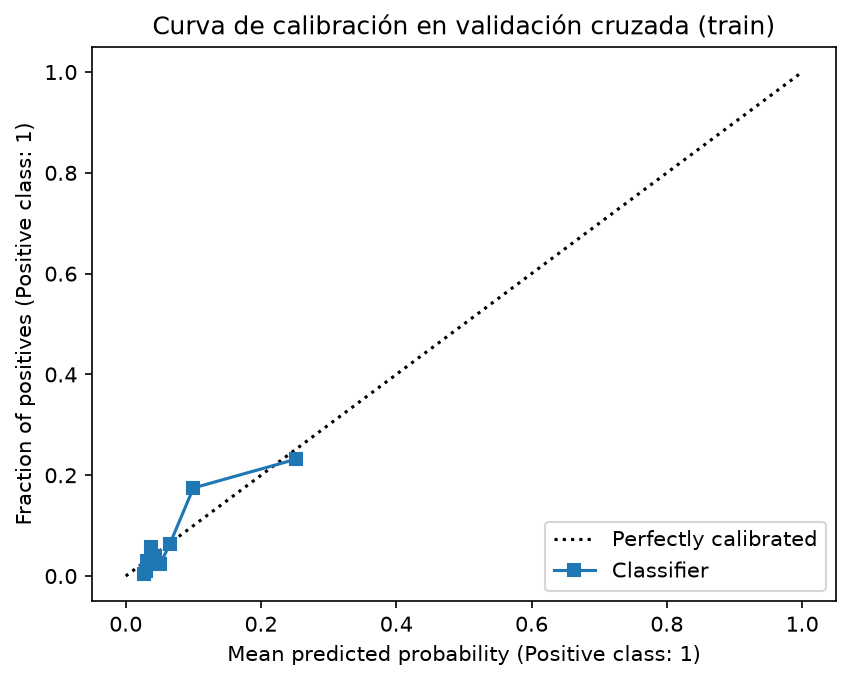
La curva de calibración queda cerca de la diagonal. Los turnos a los que el modelo asigna en promedio un 25 % de riesgo fueron peligrosos alrededor del 23 % de las veces, y los que reciben un 10 % lo fueron cerca del 17 %, de modo que en esa zona el modelo subestima algo. Ni siquiera el grupo de mayor riesgo supera, aproximadamente, uno de cada cuatro turnos realmente peligrosos: el modelo ordena los turnos, pero no puede afirmar que uno será peligroso con certeza.
El modelo final se entrenó con todo el conjunto de entrenamiento y se evaluó en los 516 turnos de prueba (34 peligrosos) con el umbral de 0,10. Detectó 16 de los 34 turnos peligrosos (recall de 0,471) y dejó pasar 18. Dio 57 falsas alarmas entre los 482 turnos sin peligro (11,8 %), de modo que de sus 73 alarmas 16 fueron ciertas (precisión de 0,219). La probabilidad promedio predicha en la prueba fue 0,067 y la proporción real de turnos peligrosos 0,066: en promedio, el modelo está bien calibrado.
| Métrica (clase peligrosa) | Validación cruzada | Prueba |
|---|---|---|
| F1 | 0,333 | 0,299 |
| Recall | 0,537 | 0,471 |
| Precisión | 0,242 | 0,219 |
| ROC AUC | 0,777 | 0,744 |
| Precisión promedio | 0,206 | 0,192 |
| Brier (referencia 0,0616) | 0,058 | 0,059 |
| Accuracy | 0,858 | 0,855 |
La prueba queda algo por debajo de la validación cruzada, lo cual es esperable: el umbral se escogió con esas mismas predicciones de validación (lo que es algo optimista) y, con solo 34 turnos peligrosos, cada turno detectado o no mueve el recall unos 3 puntos porcentuales. El modelo que siempre responde «sin peligro» tiene en la prueba un accuracy de 0,934, mayor que el 0,855 de nuestro modelo, pero un recall y un F1 de 0.
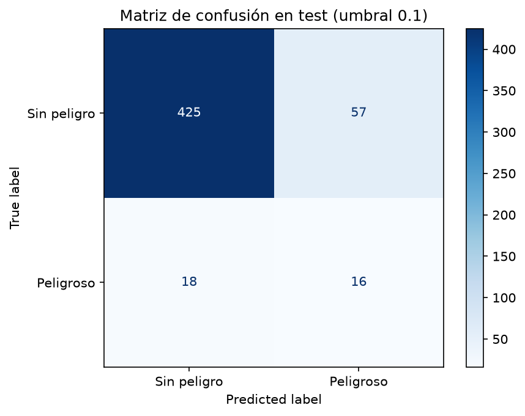
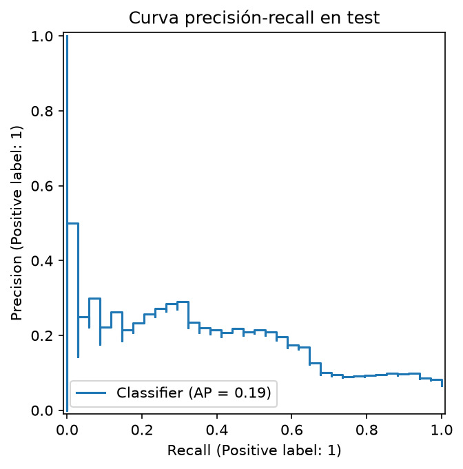
El modelo se publicó en una aplicación construida con Gradio (Abid et al., 2019), que carga el modelo exportado por el último cuaderno, el diccionario de codificación, la metadata y los turnos reales de la muestra de prueba. Se ejecuta en local con uv run python app.py y está preparada para ejecutarse en Google Colab. Tiene tres pestañas:
La aplicación incluye un aviso visible de que es un proyecto académico y no reemplaza los sistemas de monitoreo de una mina real. Se probaron los criterios definidos en el plan: la probabilidad calculada por la aplicación coincide exactamente con la del cuaderno final en los 516 turnos de prueba (diferencia máxima de 0,0; 73 alertas, igual que en el cuaderno); un campo vacío produce un mensaje de error claro en lugar de fallar; un CSV de 5 filas devuelve 5 predicciones y uno al que le falta una columna indica cuál; las métricas de la pestaña «Sobre el modelo» coinciden con la metadata; y el botón de turno aleatorio evalúa el turno cargado. La prueba en Google Colab queda pendiente de realizarse.
Para la presentación del trabajo se preparó además un simulador en el navegador que reproduce el mismo modelo calibrado a partir de sus coeficientes (diferencia numérica del orden de 10⁻¹⁶ respecto al modelo original), de modo que puede mostrarse en vivo sin servidor.
gpuls, nbumps, nbumps2, nbumps3 y energy) dan resultados similares a los de los 15 rasgos, y los modelos lineales superan a los árboles y a los ensambles en este conjunto.shift, que mostró una diferencia grande de riesgo en el análisis exploratorio (9,20 % frente a 1,85 %), no quedó entre los rasgos.shift.Abid, A., Abdalla, A., Abid, A., Khan, D., Alfozan, A. y Zou, J. (2019). Gradio: Hassle-free sharing and testing of ML models in the wild. arXiv:1906.02569.
Baak, M., Koopman, R., Snoek, H. y Klous, S. (2020). A new correlation coefficient between categorical, ordinal and interval variables with Pearson characteristics. Computational Statistics & Data Analysis, 152, 107043.
Chawla, N. V., Bowyer, K. W., Hall, L. O. y Kegelmeyer, W. P. (2002). SMOTE: Synthetic Minority Over-sampling Technique. Journal of Artificial Intelligence Research, 16, 321–357.
Lemaître, G., Nogueira, F. y Aridas, C. K. (2017). Imbalanced-learn: A Python toolbox to tackle the curse of imbalanced datasets in machine learning. Journal of Machine Learning Research, 18(17), 1–5.
Lundberg, S. M. y Lee, S.-I. (2017). A unified approach to interpreting model predictions. Advances in Neural Information Processing Systems, 30.
Pedregosa, F. et al. (2011). Scikit-learn: Machine learning in Python. Journal of Machine Learning Research, 12, 2825–2830.
Platt, J. (1999). Probabilistic outputs for support vector machines and comparisons to regularized likelihood methods. En A. J. Smola et al. (Eds.), Advances in Large Margin Classifiers. MIT Press.
Sikora, M. y Wróbel, Ł. (2010). seismic-bumps [Conjunto de datos]. UCI Machine Learning Repository. https://doi.org/10.24432/C5W902
Sikora, M. y Wróbel, Ł. (2010). Application of rule induction algorithms for analysis of data collected by seismic hazard monitoring systems in coal mines. Archives of Mining Sciences, 55(1), 91–114.
El entorno se gestiona con uv (pyproject.toml y uv.lock, Python 3.11) y los cuadernos también corren en Google Colab. Para reproducir los resultados basta con clonar el repositorio, ejecutar uv sync y correr los cuatro cuadernos en orden; cada uno lee lo que dejó el anterior.
| Archivo | Responsabilidad | Genera |
|---|---|---|
01_EDA_Limpieza.ipynb | Carga, exploración, limpieza, partición y codificación | train.csv, test.csv, test_original.csv, mapeos_categoricas.joblib |
02_Escalado_PCA_Seleccion.ipynb | Escalador, PCA y selección de rasgos | decisiones_preprocesamiento.joblib, comparacion_rasgos.csv |
03_Balanceo_Comparacion_Modelos.ipynb | 41 combinaciones de modelo y balanceo | comparacion_modelos.csv |
04_Ajuste_Evaluacion_Exportacion.ipynb | Ajuste, calibración, umbral, prueba y exportación | modelo_final.joblib, metadata_modelo.json, ajuste_hiperparametros.csv |
app.py | Aplicación Gradio | — |
Las reglas del proyecto (estilo de código, partición, ausencia de fuga de información, comentarios en español) están en AGENTS.md; el avance, las decisiones y la bitácora, en ESTADO.md; el plan detallado, en PLAN.md. Las decisiones que se apartaron del plan original (cambio de la regla de selección de rasgos, grilla de umbrales más fina, ajuste por precisión promedio y calibración de probabilidades) quedaron registradas en ESTADO.md con su motivo.